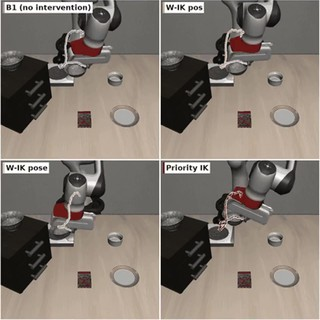

FAVOR: Fault-Aware Visuomotor Policy Adaptation via Ordered Retargeting
Manuscript in preparation, 2026
Training-free correction of a pretrained diffusion policy when a robot joint locks or loses range. Across 112 simulated fault conditions, restoring the end-effector position first raised mean success from 0.37 to 0.60 (0.11 to 0.48 with a locked joint). Real-robot tests on an xArm7 are in progress.